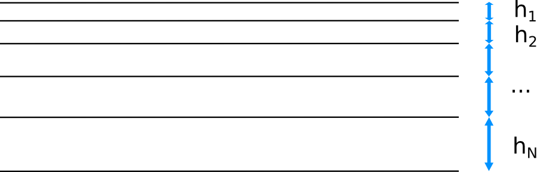

C++ code for calculation of first cell size
This simple code can calculate the first cell size $h_1$ based on three inputs:
- $N$, number of cells
- $L$, length of edge being meshed
- $k$, growth rate
Figure 1. A grid with bias
Bias factor $r$, that is used in ANSYS Meshing as an input, is defined to be: $$r = h_N / h_1 $$ Then, because of $h_N = h_1 k^{N-1}$, $$r = k^{N-1}$$ At last, the length of edge being meshed equals to: $$L = \sum_{n=0}^{N-1}h_1 k^n$$ The code performs fitting of $h_1$ by bisection to obtain $L$ with predefined $N$ and $k$.
- Compile with
g++ grid.cpp -o grid - Run with
./grid - Enter your $N$, $L$, $k$ subsequently.
- $h_1$ and $r$ are printed at the end of results.
Download source (.cpp)